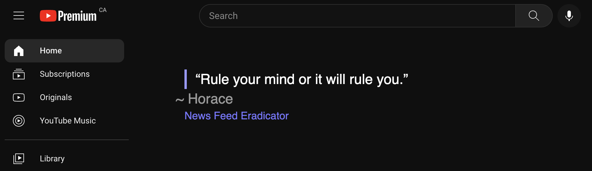
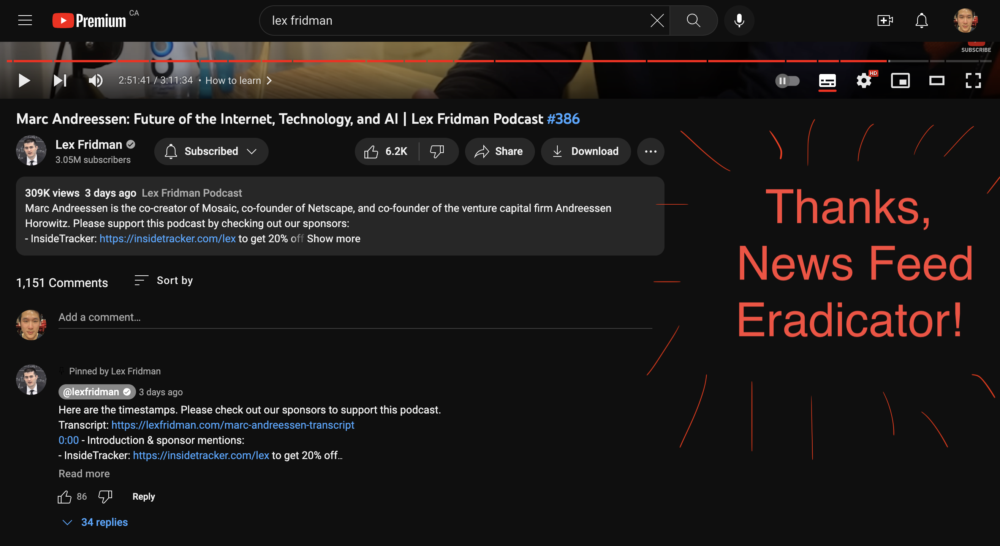
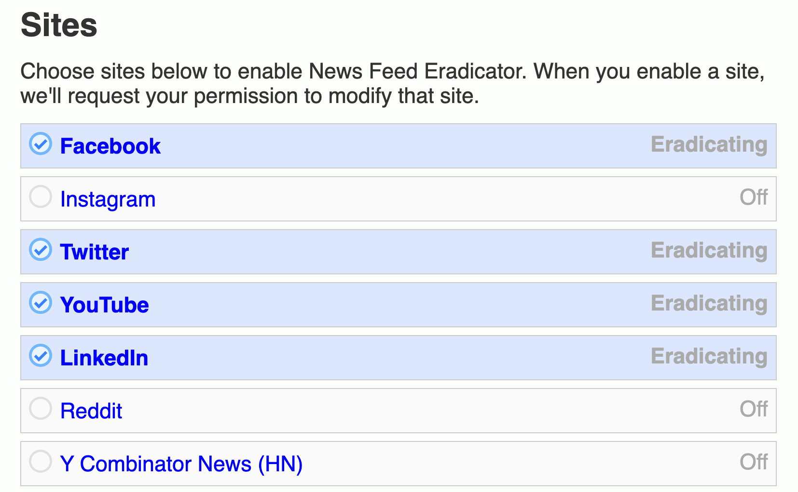
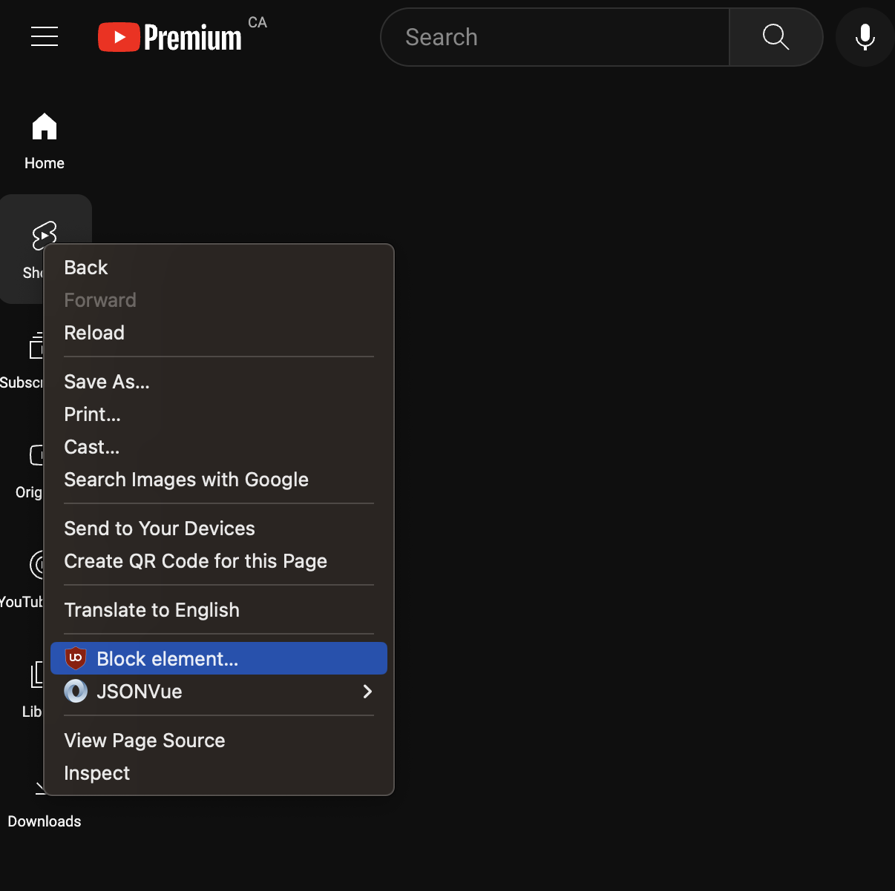
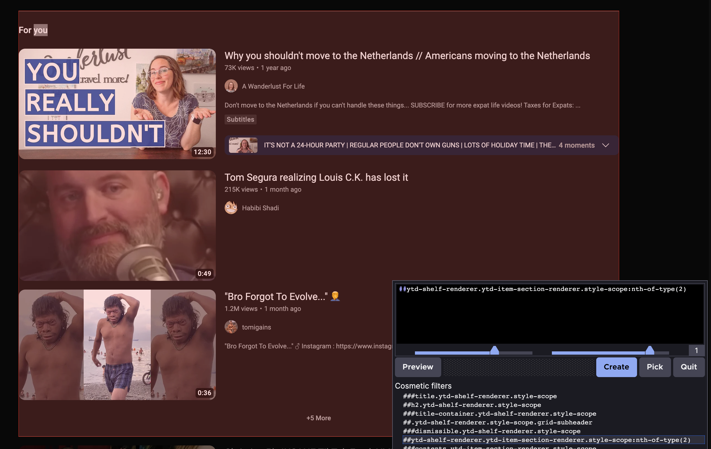
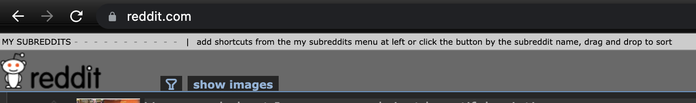
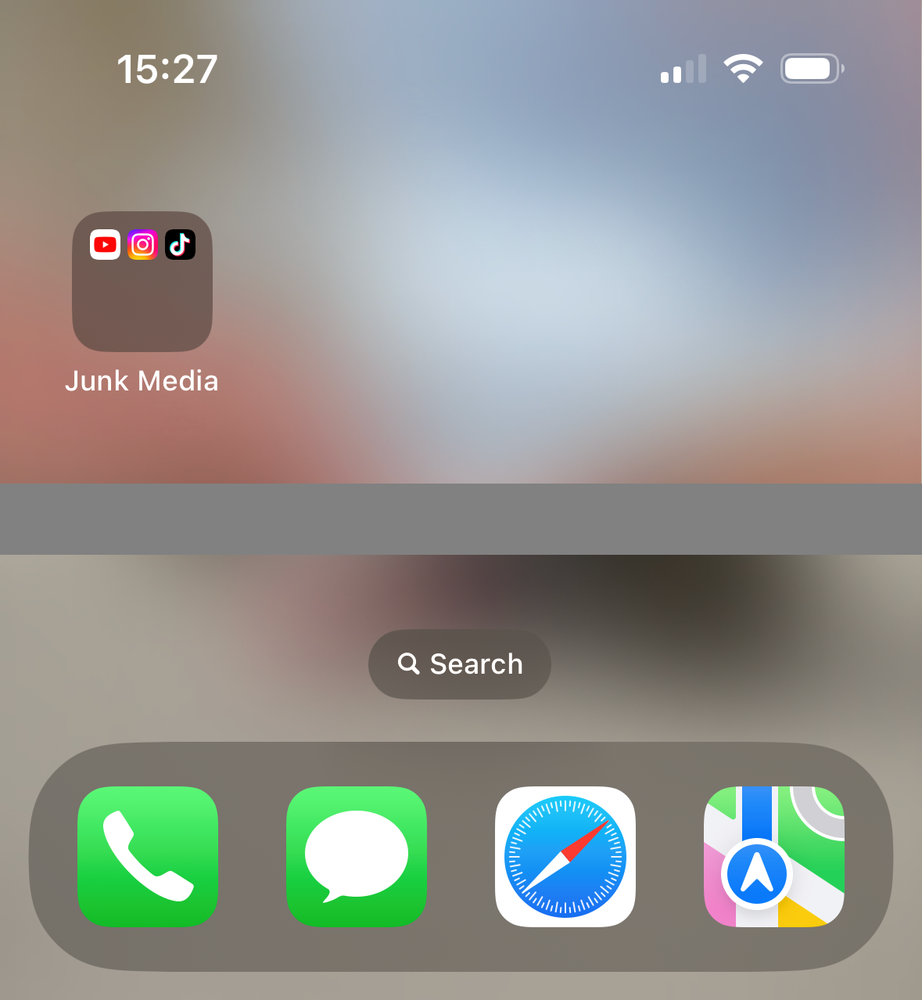

Digital Diet
Warning: reading this post will rouse guilt whenever you consume mindless media.
You are what you watch. It’s easier now than ever to be endlessly distracted. Whenever we expect to be bored, we habitually open social media apps to fill the nooks and crannies of our attention. On the bus, while waiting for coffee, before sleep, upon wake – we bombard ourselves with stimuli, leaving no room for points of reflection. What effect does the media have on our lives? Can you fathom what life would be like without gazing at the screen?
 |
|---|
| An excerpt from Stuart McMillen’s Notel comic. What’s it like before and after TV? |
Stuart McMillen’s comic: Town Without Television presents what life was like before and after TV. It highlights the shocking findings of Tannis MacBeth’s research on the effects that TV had on a small town in the 70s. To summarize, individuals who watched TV demonstrated reduced problem-solving ability, shorter attention spans, more physical/verbal aggression, less literacy, and lower creativity. They were more passive just as TV trained them to become, shrinking their agency onto the world. If you haven’t read the comic, please read it before continuing to read the rest of this post.
Watching TV affects you even when you’re not watching
It’s clear what the culprit is to our reduced attention span: regularly watching passive media. Whether the screen is in the living room across the couch or in our hands under our chin, its long-term effects are clearly against our aspirations to become the best versions of ourselves.
 |
|---|
| Texting neck, an additional symptom of doom scrolling. |
Youtube, Tiktok, and Instagram no better for us than TV. It is more customized to our interests, but the difference is the choice between 1 million channels instead of 50. Our watching habits are worse than ever before, converging on the boundaries of addiction. We allow ourselves to indulge on junk media. But is there an alternative?
No More Circuses
If you value focus, attention, and clarity of thought;
if you find more meaning in producing than in consuming;
but you find yourself distracted by clickbait and scrolling;
then remove the cues for junk media from your screens.
Atomic Habits suggests that making cues invisible will reduce the likeliness of triggering bad habits. I recall one recovering alcoholic refusing to go camping because it is a cue to start drinking. I understand the sentiment, but I’m not suggesting that you block the entirety of the Internet or Youtube to distance yourself from junk media. We have the technology to block the cues selectively.
News Feed Eradicator

It’s a Chrome extension that blocks out the recommendations portion of Youtube. I can still use the search feature.

It also blocks the recommendation section while watching a video.

It works for many popular sites. I don’t use it for Reddit because I only block the popular and all sections. I recently unsubscribed from most subreddits following its implosion.
Adblock

Adblock can be used to block more than ads. I use it to block the Shorts button that appears beside my subscription button. This way, I can still subscribe to media that bring me joy or learning without the temptation of shorts.

I can even use it to block recommendations from my Youtube search results. This trick also works for endscreen content.

Here’s how Reddit’s top bar looks like for me using adblock to remove all and popular tabs. You can do this to any static layout on any website.
Adblock filters
! 2023-06-07 https://www.reddit.com
www.reddit.com##a.subbarlink
! 2023-06-26 https://www.youtube.com
www.youtube.com##ytd-guide-entry-renderer.ytd-guide-section-renderer.style-scope:nth-of-type(2)
www.youtube.com##ytd-reel-shelf-renderer.ytd-item-section-renderer.style-scope:nth-of-type(2)
www.youtube.com##ytd-reel-shelf-renderer.ytd-item-section-renderer.style-scope
! 2023-06-30 https://www.reddit.com
www.reddit.com##.tabmenu > li > .choice
! 2023-07-01 https://www.youtube.com
www.youtube.com##ytd-shelf-renderer.ytd-item-section-renderer.style-scope:nth-of-type(2)
www.youtube.com##.ytd-rich-section-renderer.style-scope > .ytd-rich-shelf-renderer.style-scope
www.youtube.com##.ytp-endscreen-content
Junk Media Folder
The same tactics that Chrome extensions allow can’t be used for apps on my iPhone. But instead of deleting the apps, I can make it harder for me to reach it. To get to junk media, I have to swipe to the third page of apps and go into the Junk Media folder to access these apps.

I like to upload videos as a creative outlet and to stay connected to people that like watching it, so I like having these apps for that.
Fill in the void
Much like how physical fitness involves removing junk food, mental fitness involves removing junk media. As you would replace empty calories with healthy ones, you’d also swap out mindless media with mindful ones. If you’ve always wanted to read more, here’s your chance. Or, you could get on a hyproductivity curve as described in Lex Fridman’s interview with Marc Andreessen: Advice for young people.